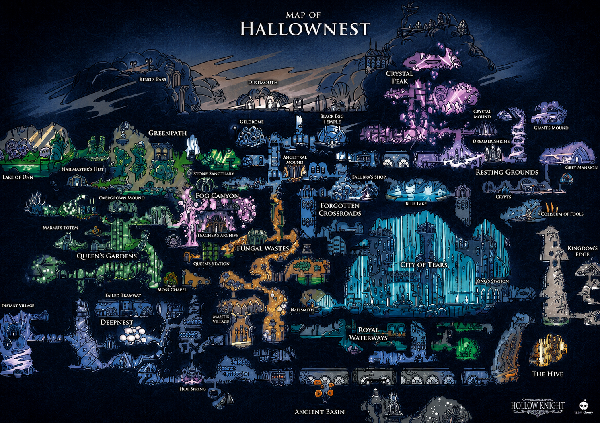
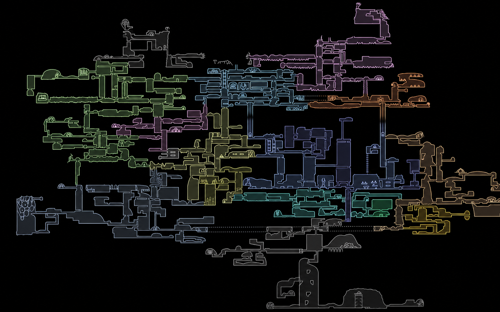

Mercaderes de Hollow Knight
A lo largo de Hallownest, encontrarás diversos personajes que ofrecen objetos, amuletos y mejoras vitales a cambio de Geo. Interactuar con ellos es fundamental para prepararte adecuadamente antes de enfrentarte a los jefes más difíciles o explorar las áreas más profundas y peligrosas del reino.
Mapa de Hallownest

Mapa de Hallownest pero sin detalles
